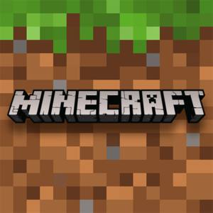

MineCraft... Самая известная игра в жанре выживание и в общем. В Майнкрафт можно играть по разному, на серверах или в одиночестве с модами.Есть сервер, как отдельное приложение, его можно скачать бесплатно
Так же нужно зарегестрироваться на их сайте
Можно купить дешёвую лецензию на время на этом сайте, так же и купить лецензию на вечно.Но предётся качать лаунчер с офицального сайта
Еще можно купить лецензию на основном магазине Майнкрафт,но тут будет дорого(Как раз тут можно установить официальный лаунер).
Моды,скины,карты на прохождение и шейдеры можно скачать на сайтах.